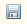
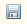
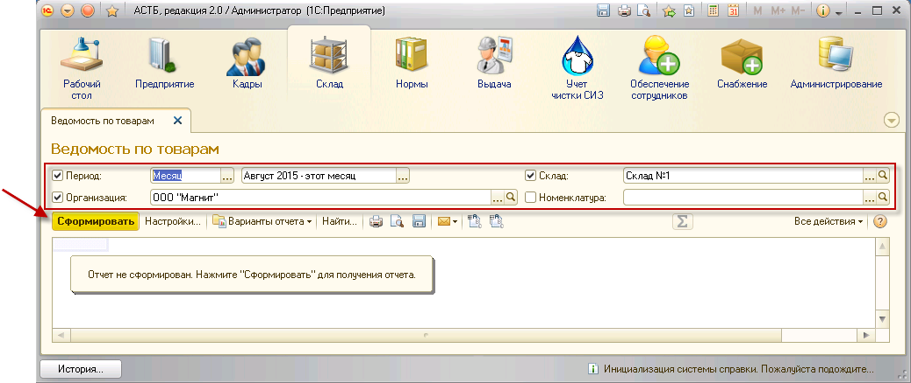
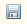

на командной панели отчета. Сохранить отчет можно с помощью кнопки .
на командной панели отчета. Сохранить отчет можно с помощью кнопки .Отчет показывает наличие и движение товара на выбранных складах за заданный период.
Для формирования отчета необходимо зайти в раздел «Склад», «Панель отчетов по складу». В открывшемся окне выбрать «Ведомость по товарам».
В поле "быстрых" пользовательских настроек будет выведен перечень возможных параметров для отбора данных при формировании отчета:
1. Период – должен быть установлен период для отбора данных по движению товара на складе. Он может быть произвольным (установка начала и конца периода) или фиксированным (день, неделя, декада, месяц, квартал, полугодие и год).
2. Организация – необходимо указать организацию для корректного формирования отчета.
3. Склад – необходимо установить склад выдачи СИЗ.
4. Номенклатура – при заполнении данного поля в отчете будут отражены остатки и движение только по выбранной номенклатуре за заданный период.
Проставьте флажки напротив тех параметров, которые будут использованы для отбора данных, и укажите нужные значения. Затем нажмите кнопку «Сформировать».

Будет сформирована ведомость по остаткам на складах.
Отчет будет содержать следующие данные:
1. Номенклатура выдачи и ее характеристики.
2. Начальный остаток – количество товара на складе на начало периода.
3. Приход/Расход – движение товара за указанный период.
4. Конечный остаток – количество номенклатуры на конец периода.
Если указать значение параметра «Номенклатура», в отчет попадут данные только по выбранному товару.
Чтобы распечатать сформированный отчет, нажмите кнопку на командной панели отчета. Сохранить отчет можно с помощью кнопки .
Данный отчет выводит данные по наличию номенклатуры на складе за указанный период.
Для формирования отчета необходимо зайти в раздел «Склад», «Панель отчетов по складу». В открывшемся окне выбрать отчет «Остатки товаров на складах».
В поле "быстрых" пользовательских настроек будет выведен перечень возможных параметров для отбора данных при формировании отчета:
1. Период – должен быть установлен период для отбора данных по наличию товара на складе. Он может быть произвольным (установка начала и конца периода) или фиксированным (день, неделя, декада, месяц, квартал, полугодие и год).
2. Организация – необходимо указать организацию для корректного формирования отчета.
3. Склад – необходимо установить склад выдачи СИЗ.
4. Номенклатура – при заполнении данного поля в отчете будут отражены остатки только по выбранной номенклатуре.
Проставьте флажки напротив тех параметров, которые будут использованы для отбора данных, и укажите нужные значения. Затем нажмите кнопку «Сформировать».
Будет сформирован отчет.
Отчет будет содержать следующие данные:
1. Номенклатура выдачи и ее характеристики.
2. Конечный остаток – количество номенклатуры, находящейся на складе на конец периода.
Если указать значение параметра «Номенклатура», в отчет попадут данные только по выбранному товару.
Чтобы распечатать сформированный отчет, нажмите кнопку  на командной панели отчета. Сохранить отчет можно с помощью кнопки
на командной панели отчета. Сохранить отчет можно с помощью кнопки  .
.